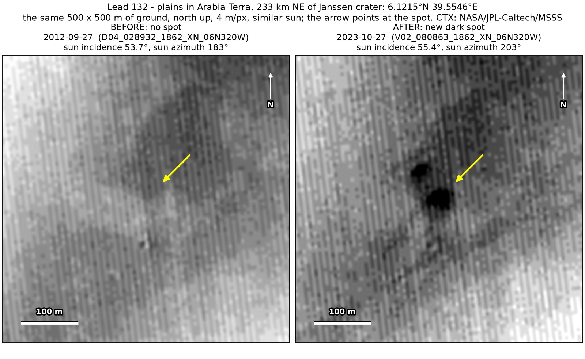
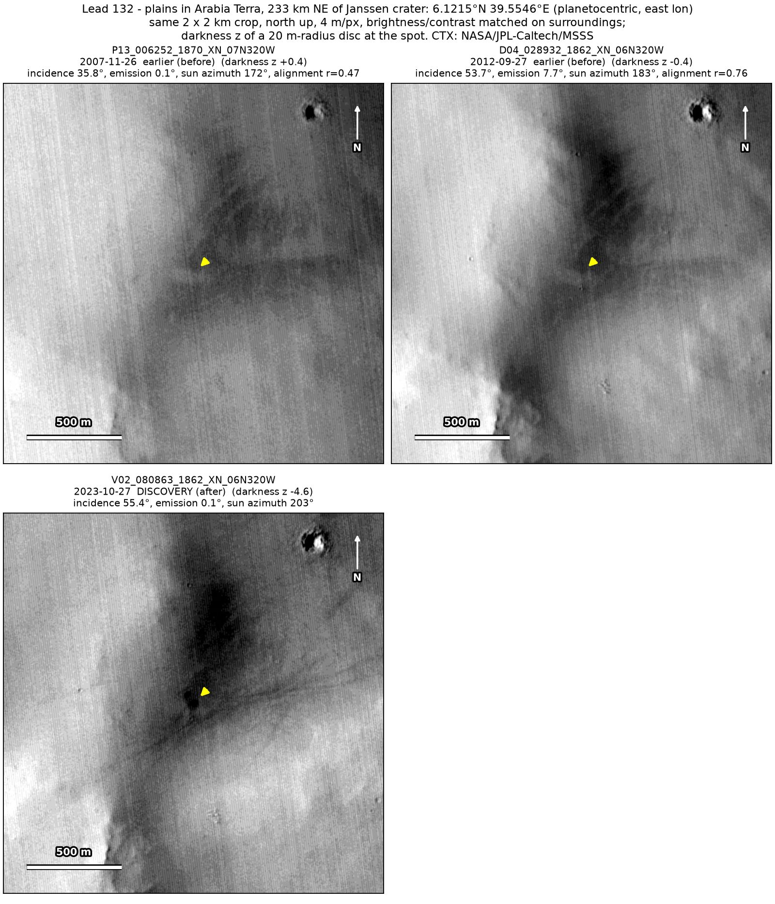
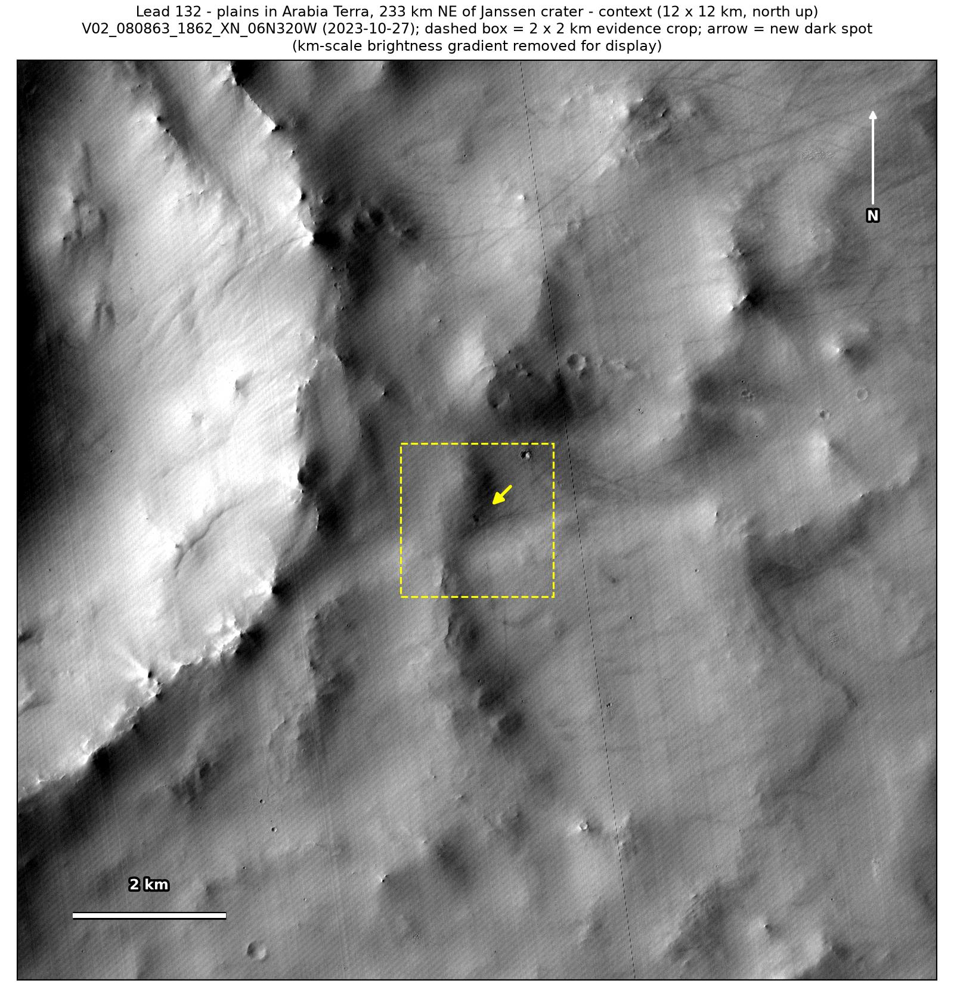

Professor of Mathematics
Paata Ivanisvili
Department of Mathematics, University of California, Irvine

← Possible new impact sites on Mars
Candidate 132: Plains in Arabia Terra, 233 km north-east of Janssen crater
Promising · roughly 50%

What changed. Two compact dark spots, about 30 and 20 m across and 40 m apart, with a faint trail about 60 m long to the south, appeared at the southern end of a broad dark band on plains in Arabia Terra, north-east of Janssen crater, between September 2012 and October 2023. So far only one CTX image shows them.
Why it may be a new impact. Two earlier images, from 2007 and 2012, show plain ground there, the second taken under a sun like that of the October 2023 image. Two compact dark spots side by side fit the blast zones of a small impactor that broke up in the atmosphere.
- Location
- 6.121° N, 39.555° E
- Absent
- 26 November 2007 and 27 September 2012
- Present
- 27 October 2023
- Size
- Two dark spots, about 30 m and about 20 m across, 40 m apart (50 × 44 m in the October 2023 image)
- Confidence
- Promising candidate: roughly 50% likely to be a new impact.
- Caveat
- Only one image shows them, so it is rated promising rather than strong. Dust devils are active there, and one track passes just south of the spots, though their tracks are long lines, not compact spots. The faint trail could also mean a small slope streak (a dark streak left by dust sliding down a slope) at the end of the dark band, and no mark nearby is dark enough in the earlier images to show whether they would have caught the spots. No image from the high-resolution HiRISE camera covers it; the nearest ends 0.5 km away. Like every candidate here, it is unconfirmed: see the caveat.

